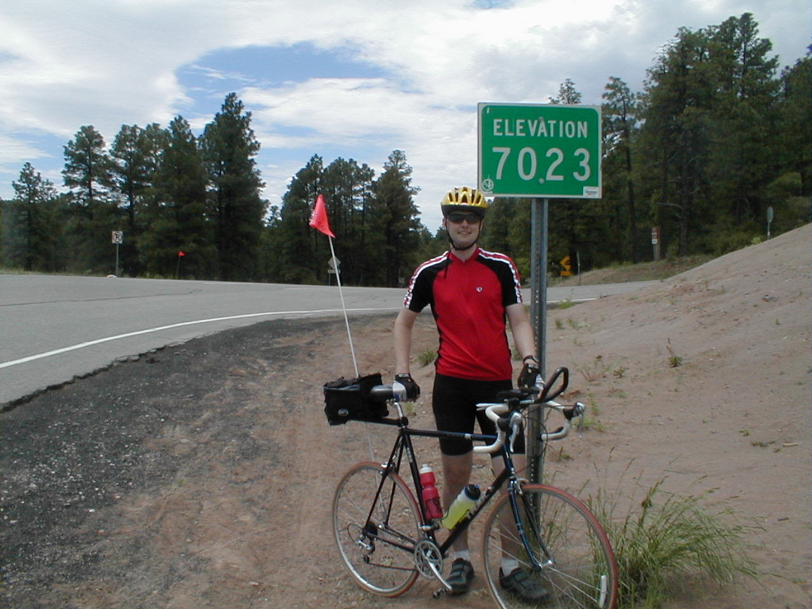

Day 6: May 18, Prescott, AZ to Cottonwood, AZPrevious Day - Home - Next Day Photo of the DayMe at the peak of Mingus Mountain. Keegan's LogDay 6: May 18, Prescott, AZ to Cottonwood, AZ Mileage: 46.47 milesWeather: 70-90 degrees, Mostly sunny Vertical Climb: 2880 feet Riding Time: 3.5 hours Today was a wonderful day for a bike ride! After filling ourselves at JB's breakfast buffet, we left Prescott and headed for the hills. Our first challenge was Mingus Mountain. We ascended from about 5,100 feet up to the summit at over 7,000 feet in about 13 miles of climbing. The climbing is slow going, but it gives you a chance to look around and really take in the scenery as it slowly passes by. I stopped almost every mile, both to snap a picture and to rest my Jello-legs. At the summit of Mingus Mountain (7,023 feet), we stopped for a rest at the sag stop. The next stop was Jerome, but first we had a 2,000 foot drop down the winding mountain roads. The descent was a blast, cyclists can go a lot faster than cars on the winding roads, so the more generous drivers will let you pass. It seems like we've been climbing for days, so the long downhill was a welcome relief. We stopped in Jerome for lunch, a small town stuck in the middle of the hill. We got a hamburger and a slice of strawberry pie, then went to look around the town. The view from the stores was awesome, both of the peaks from which we had just descended, and of the expansive valley below. The town was interesting, but neither dad nor I had much interest in the boutique stores that seemed to dominate the area. We left Jerome and continued our descent, this time the roads were a little less winding, so I peaked at 48 mph on the way down. We decided to take the extra trip to the Tuzigoot Indian ruins, which turned out to be the excavated ruins of an ancient indian pueblo. After a short walking tour we headed back to the hotel, and a nice rest in the hot tub. Tomorrow we venture on to Flagstaff, the ride is less than 50 miles but with over 5,000 of climb. The scenery is promised to be the best of any day on the tour, luckily my camera has a fresh set of betteries! Phil's LogDay 6, Cottonwood, Arizona A friend from the office told me that I'd enjoy the road from Prescott to Cottonwood. He was right. It was a short day at only 45 miles, but there was a LONG climb from Prescott Valley to the top of Mingus Mountain, my watch shows 2880 feet of climbing. It is remarkable how sensitive the desert is to small changes. A small deviation in slope toward or way from the sun will cause a species of cactus to thrive or not grow at all. There was a lot of prickly pear at the lower elevations, many had soft yellow blooms on the outward tips. Another unusual plant, I don't know the name, has a bushy sort of firework-exploding of little needles as a bushy base, and shoots up one long spear that explodes into tiny white flowers. Two of these plants that I saw had done something unusual, they had grown without flowers very thick and tall such that they looked to all the world like one huge, 8 foot tall asparagus spear, complete with the scaly tight leaves at the end. As we crossed the peak of Mingus Mountain, after taking a happy sag stop, we began a long descent. Soon there were signs along the switchback road saying that we had entered the town of Jerome. Where? There was no town, just the usual beautiful view over the near cliff. Then there appeared an old house on a concrete buttress, then more. Our switchback rod suddenly had a name, and numbers on houses that were close together, still on the side of the mountain. Another "block" and we were in the heart of Jerome, a mining town of 15,000 active from about 1910 through the early Fifties. It has been reborn as a nice but definitely tourist oriented town, lots of artsy-fartsy shops and at least one good restaurant, great strawberry pie. When time to leave, the route continued down the mountain into Cottonwood. Keegan and I were two of the few that chose to do a side-trip into the Tuzigoot Indian Ruins, a semi-restored indian settlement last occupied about 1500. From there we rolled into Cottonwood, a moderately poor town of used car iots, few motels, and spectacular vistas of the valley. Fulfilling in small part to talk about the others, one remarkable one is E..... I spoke with her while riding for a time, she is a retired nurse from Manhattan (NYC) who now lives in Edison, New Jersey. The grapevine has it that she is 71, came in #1 in the Hawaiian Ironman in her age group last year (men & women!), and not too long ago swam around Manhattan Island, a most treacherous and difficult feat. To see the determination that she carried when she rides, it is very hard to believe that this is not true. And to see her physique on a bicycle, huge calf muscles working beneath skin that is not as elastic as it once was, one realizes that this quiet woman knows few personal bounds. In the desert, she never complained or even joked about the miles, or the heat. On the hills, she will pause for a break and chat with others, but no comments about the steep grade. She just goes and does it. I have never spent time in northern Arizona before. This is genuinely beautiful country. It is big, on a scale even more appreciated on a bicycle. There is color to the rock, and shades of green to the desert valley floor. It is a place that asks to be explored slowly. |
{kind=link}